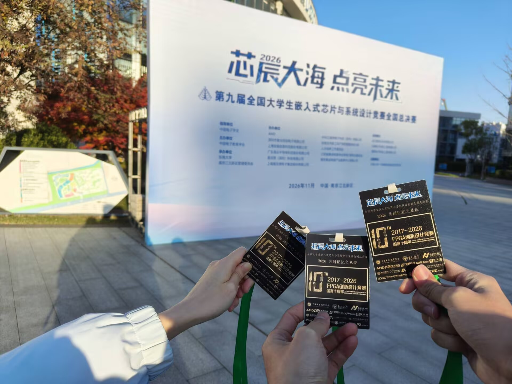
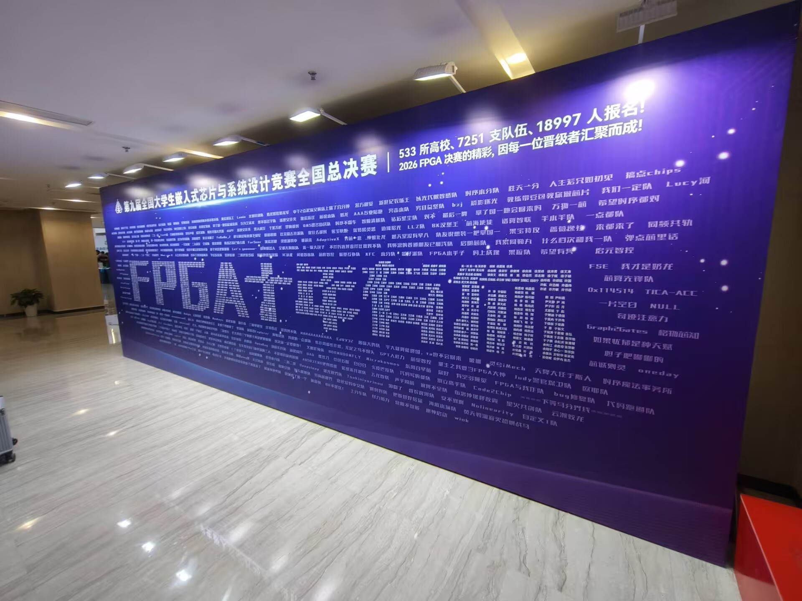

嵌赛赛后呓语
22 号在南京全国大学生嵌入式芯片与系统设计竞赛（也就是“嵌赛”）决赛正式结束，好久没发博客了，这两天闲的没事写点东西吧。
同样的，以下内容信息密度极低，闲的没事的可以看看。
初赛
主角阵容和打西门子杯的一样，不过这次从省二阵容变成国二阵容了🤓。
9 月 15 号决定要打嵌赛 FPGA 创新设计赛道（其实这时候比赛通知已经发了一段时间了），22 号拿到板子（自费的两千多😭）正式启动。
我们选的易灵思赛题四，在 AI 时代这种纯边缘识别的题目着实是有点太简单了。题目所有的要求（包括基础要求和进阶要求）我们几天就全跑出来了。
那咋办，大家都几天做完所有要求，只能卷拓展了呗。
准确来说是拿到板子的几天做完，还有好多因为板子断货或者没申请到之类的原因连板子都拿不到只能去耍起了。
最大的问题是题目要求彩色转灰度，但我们只能买到黑白摄像头，就只写了彩色转灰度的代码放在那里但是不调用（后面发现其实并无太大影响）。
我们选定了做和车辆有关的方向。因为一开始没有明确的规划，基本想到啥做啥，最后做出来的几个方向可以说是打不着边。
提示 1：如果要做多个方向的拓展，最好在做前先规划好他们之间的联系。
我们初版做的四镜像合一：赛题要求镜像、道路识别镜像（识别车道线和移动车辆）、形态学计数镜像（就是数比如围棋这种的图形数）、文字识别镜像。
做这么多种方向其实主要原因是每个方向都很难达到非常好的效果。
或者我换句话说：每个方向的质量都做不到非常好，只能多做几个方向用数量弥补一下。
提示 2：如果能把个别方向的效果做的更好，还是不要选择多开几个方向出来。
不过主要这个板子的硬件太局限了，摄像头又烂，板子资源又少。还要考虑和赛题的边缘识别关联性，每个方向做到一定程度就到头了已经。
我们做的第二版四镜像合一：赛题要求和拓展镜像（在原来赛题要求以外并入了形态学计数和简化的文字识别的模式）、道路识别镜像（加了一个快速接近警报的逻辑）、车流计数镜像（从形态学计数拓展来的）、车牌识别镜像（从文字识别拓展来的）。
可以看出第二版比起初版来说至少每个镜像都和车有关了（只不过应用场景还是莫名其妙就是了）。
最后录了个视频（视频可以剪辑，简直太水了），每个模式挑效果最好的几次剪到视频里。再写个文档，交上去以后一阶段（也可以叫初赛吧）就正式结束（这时候应该是 11 月 4 号吧）。
耍一段时间通知出来发现我们居然进决赛了，几乎没咋准备就飞南京去打决赛了。
整个初赛最主要的两点就是早点买板子（或者搞到手板子，不要等申请，申请下来的超级晚，更不要说一小段时间以后板子就会断货，产生极大的拖延）以及剪一个好看的视频出来（可以配合 ppt 演示）。
决赛
决赛可以说也是非常的水。
我们十九号去，吃了顿巨难吃的预制鸭血粉丝汤。
二十号睡到中午，下午去签到和打能力测试。
签到后另一个参赛牌，有一说一这个参赛牌是真的挺帅的，黑金配色。就是这个蓝色 logo 比较丑，换个色或者镂个空都很不错啊，可惜。

还有里面这个海报也挺不错（外面那个太丑了）。

这个测试是通过性检验吧，就一组做一道 verilog 测试题。大家基本都是 AI 写的代码，所有可能还是需要学一下的。
不过这个测试也算非常简单了，放洛谷上应该顶多绿题吧，从出决赛名单到飞南京之间时间速成应该是绰绰有余。
测试时间六点到八点，验收完可以直接走，队长群发题。开始手机平放在桌上。三个人电脑都要录屏，从收题前开始到验收完结束。不让上网搜、不让用本地部署 AI，可以查本地资料。具体就是用 verilog 写一个特定波形的仿真代码，之前的赛题网上都能搜到，我就不多说了。
开始测试半个小时不到就做完走人了，去找了个地方吃了顿烤肉。
二十一号我们是上午答辩。
答辩也是 emm…
一个赛道的所有组坐在一个教室里，每组一张桌子两把椅子（对的对的，椅子不够要自己找）。答辩就是几个老师来每个组的桌子来看演示看代码和问问题。
我们还提前准备了个 ppt，想了下怎么把几个莫名其妙的东西放一起讲个好点的故事，上午又担心不稳定调了好久第一个镜像。这时候二三四镜像都是效果非常好的。
结果我们倒数第二个答辩，几个人一来说跳过跳过跳过（看来是想吃饭了），ppt 也没看，镜像一直接跳过。这时候刚才还好好的后面三个镜像又开始抽风，直接被嘲讽一波。
问我们用的软件做的还是硬件做的，我啥都想不起来，队友说是软件做的。不过实际上我们应该是基本没咋用 IP 核也就是基本没用软件做。评委听到就没问其他什么直接结束了。
提示 3：尽量少用 IP 核，减分项。
以上的答辩经历全部是我们能力较差导致的，绝无谴责评委和比赛的意思。
答辩完直接就结束决赛了，如果估摸自己拿不到国一或者特殊奖项其实可以直接回去了。
二十二号上午颁奖，前面八点还是八点半开始都是不知道啥东西，到九点半快十点才正式开始颁奖。最后我们也是国二收尾。
暂时想不到别的了，如果有问题可以邮箱联系我，我的邮箱站点“关于”有写。
总之，也算是我参加的第一个国家级比赛以及我得到的第一个国家级奖项吧。
最后，感谢学校的支持，感谢老师的知道，感谢父母培养，感谢队友的付出，也感谢队友父母对队友的培养🤓